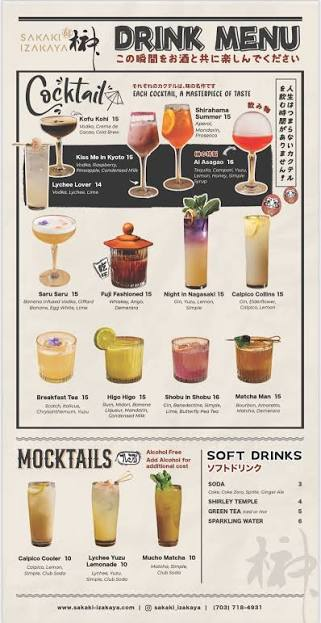

Kofu Kohi ($15): A rich, coffee-forward blend made with vodka, crème de cacao, and cold brew coffee.Kiss Me in Kyoto ($15): A creamy, fruit-forward cocktail mixing vodka, sweet raspberry, tropical pineapple, and rich condensed milk.Shirahama Summer ($15): A refreshing, vibrant seasonal blend featuring Aperol, sweet mandarin, and crisp Prosecco.Ao Asagao ($16): A balanced, citrusy creation containing tequila, orange curaçao, yuzu, lemon, sweet honey, and simple syrup.Lychee Lover ($14): A clean, aromatic cocktail crafted with clean vodka, sweet lychee, and fresh lime.Saru Saru ($15): An adventurous, smooth mix of banana-infused vodka, Giffard Banana liqueur, silky egg white, and fresh lime.Fuji Fashioned ($15): An Eastern twist on a classic, made with fine whiskey, aromatic Angostura bitters, and rich Demerara sugar syrup.Night in Nagasaki ($15): A refreshing botanical drink featuring gin, citrusy yuzu, lemon, and a touch of simple syrup.Calpico Collins ($15): A bubbly, sweet, and tangy blend combining gin, floral elderflower, creamy Calpico, and fresh lemon.